1. Introduction and Goals
1.1. Requirements Overview
Nowadays, all the average social platforms for hikers are centralized and not totally secure services. With Viade, we present a proyect that consists of a decentralized routes management system developed following solid specifications.
The main requirements are:
-
The system will be based on a decentralized architecture where data storage is separated from the app.
-
Users can store their routes in their own pods.
-
Users can view the routes stored on a map.
-
The app will allow a user to share pictures, videos or information about a route with other friends.
-
A user can get notifications when some friend shares a route with him.
-
Users can have groups of friends with whom they may want to share a route
-
It should be possible to view routes loaded by users that are using a different app, so interoperability with other route management systems should be taken into account.
The objective of Viade is to give users a platform where they can share their taste and opinions about the routes they take, in a way that they can be sure all their data will be secure.
1.1.1. Developers:
1.2. Quality Goals
| Goal | Description |
|---|---|
Usability |
All users must be able to use the application with no difficulties. Therefore, the app will be intuitive and will have a user-friendly interface. |
Interoperability |
All the system should allow the users to interact with other applications that use the same standard. |
Performance |
The service should run fluidly, with no problems or restrictions that affect to its performance efficiency. |
Scalability |
The service must be scalable and modular, in order to facilitate a better adaptation for new geographic formats and functionalities. |
Maintainability |
Following the previous point, the application should be highly maintainable, which means it could expand in the future in a quite simple way. |
1.3. Stakeholders
| Role/Name | Description | Expectations |
|---|---|---|
He marks the developers work during the project and gives considerations about how it will be done |
A well-formed application, accomplishing the requirements that were proposed. |
|
Developers |
The workforce of this project will develop the main system while understanding the constraints and requests of the client. |
End with a good, usable, stable application, that represents the efforts we put during the project. |
End Users |
People who will use the final application. The system must suit the main goals for the users to have the best experience. |
Have an intuitive, fluid and easy use of the Viade system. |
SOLID Devs and Tim Berners-Lee |
They provide the main technology in which the application is based |
They are interested in the best results possible of the project, as any work could be helpful as feedback of the SOLID technology. |
2. Architecture Constraints
2.1. Technical constraints
| Constraint | Explanation |
|---|---|
JavaScript |
The programming language used to support the entire development of the application. It will serve as the backend of the system. |
React |
A JavaScript library maintained by Facebook that allows to create easy-to-use interfaces. It is used by a lot of companies thanks to its open source and maintainable nature. |
Solid |
It is an open source project, created by Tim Berners-Lee, that aims to achieve a complete, decentralized web allows users to decide where to store their own data. |
Git |
Version control software. |
JSON-LD |
It is a Linked Data format based on the JSON format and very easy to read for humans. |
2.2. Conventions
| Constraint | Explanation |
|---|---|
W3C Standards |
The application should comply with W3C Standards, in order to increase interoperability. |
Linked Data |
Following Solid specification, the architecture must use linked data principles. |
3. System Scope and Context
Tha main goal of ViaDe is to give the ability to create, store and visualize routes without without being forced to store all the related data in a concrete, third-party server. Therefore, the data will be stored in the user’s POD, which will convert ViaDe in the middle-man between Solid and the user.
3.1. Business Context
The public target for the applications is all types of users, but especially non-technical users. The application will allow the user to store any route they create or import in their own POD, and visualize them in a proper, intuitive way.
As application is decentralized, the application and the data storage are separated, being this last one owned by the user (POD).
Interoperability is one of the main goals of the system, so users will be able to use the routes and other data in different applications with a similar functionality.
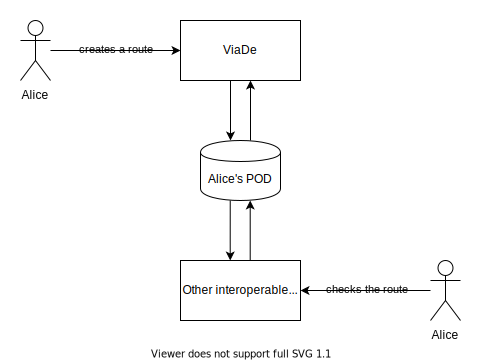
3.2. Technical Context
The main idea is to separate the data storage from the rest of the app, so each user will be able to store its data. The communication between the different users and the data sharing will be managed by the application itself.
To achieve this, we follow the SOLID specifications as it ensures that our application is decentralized. Each user will be able to store its data in their own POD and grant the applications access to just certain type of data. With SOLID users can use the data of the routes in other applications that also use that kind of data.
-
Technical interfaces:
| Technical interface | Explanation |
|---|---|
React |
Used to create the general interface design of the application, integrating it with the JavaScript backend. |
JavaScript |
Language in which all the backend of the application is developed. |
Solid |
It’s the base of the project. Each Solid POD serves as the personal storage for each user of the application. |
APIs |
Several APIs are used in order to achieve the correct functionalities: the main ones are Leaflet and JawgMaps. |
GitHub Pages |
GitHub’s servers will allow us to host the application. |
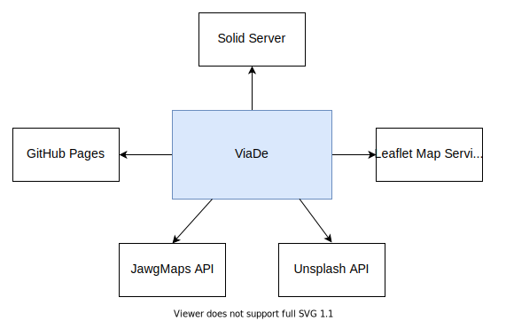
4. Solution Strategy
4.1. Technology Decisions
For developing Viade we will be following the next strategy (the necessary reasoning of our decisions is explained in section 9):
-
React. To achieve a responsiveness interface, adaptable to all kind of devices, this framework will be used.
-
Solid libraries. These libraries will allow the application to communicate in a simpler way.
-
Solid File Client.
-
Solid Auth Client.
-
-
Jest and Enzyme. This library is used to get a tested environment. Each functionality should be tested in order to asure its proper execution.
-
Leaflet. Library used to display the maps in the application. It’s an open source software, and allows to create several types of maps, with functions like geosearching and more.
-
JawgMaps. This library is used for a more specific functionality, i.e. the elevation for each of the trackpoints of a route.
4.2. Organizational Decisions
To achieve the best, possible result, there are several decisions:
-
Agile development: the use of Scrum, with its guidelines like following a kanban, creating issues to enhance communication in the team, and giving specific feedback in results of functionalities.
-
Testing: this decision, although it will be a disadvantage in the short run, will also be a good advantage in the long run in order to achieve a better result for each functionality.
5. Building Block View
This is a decomposition of the system into different diagrams.
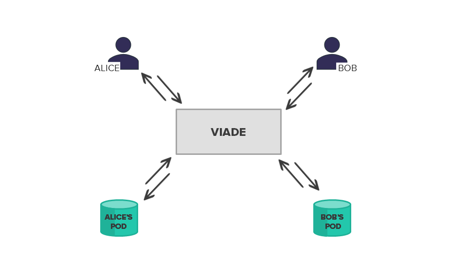
5.1. Level 1 - Viade
Global view of the external communications of application with other services.
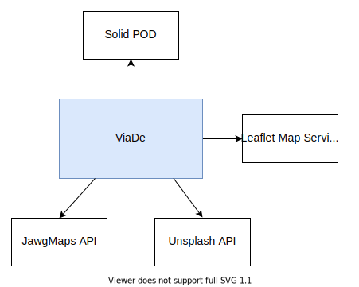
5.2. Level 2
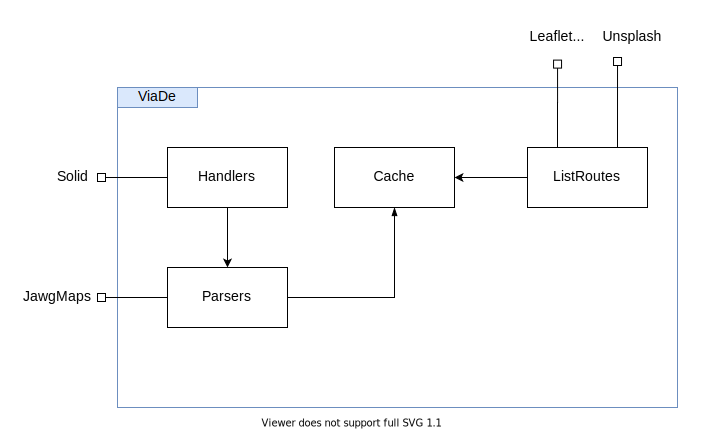
6. Runtime View
In this section, some use case scenarios will be described to indicate concrete behaviour of the application to a certain interaction.
This segment will be in continuous development.
6.1. Creating a new route
Users will be able to create a new route. To do it, an entire is designed to guide users in order to complete all the form in the correct way. Several data is indicated in this wizard, like the name, description, date, points on the map and photos or videos of the route.
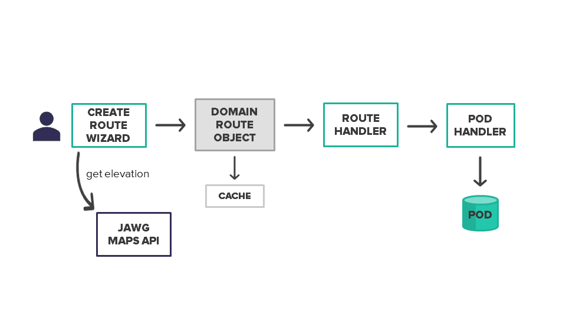
6.2. Importing a route
In addition to the creation of routes, users can also import any route they want. To do that, another wizard, smaller than the previous one, guides the user during all the steps.
Compatible types of files to import a new route are GPX, JSON and JSON-LD.
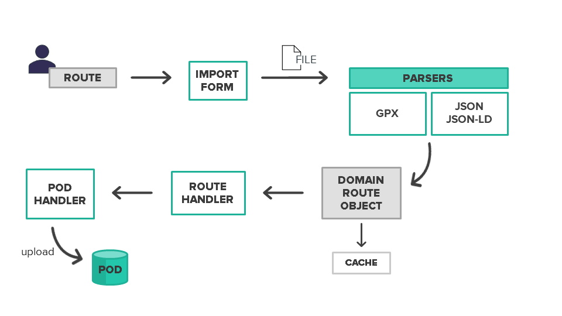
6.3. Listing routes
In Viade, the most important functionality is the visualization of routes stored in the POD of the user. This task, that seems very simple, is composed by several classes that act as handlers, parsers, and definitions of a route. Here, the JawgMaps API takes place, in order to ensure that all routes downloaded from the POD have correct elevation calculated.
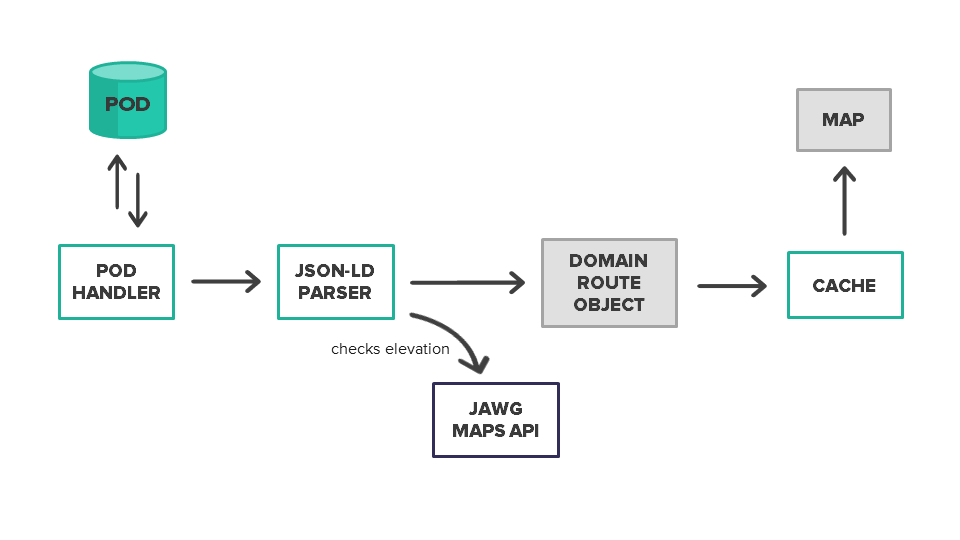
7. Deployment View
Viade is a descentralized system where the information from the users is independent from the application.
7.1. Test Environment
| Test Framework | Explanation |
|---|---|
Jest-Enzyme |
Main test libraries to ensure all the React components are rendered correctly. |
Travis |
Continuous integration tool whenever a new feature is added. Travis takes care of running the tests as well as running code coverage analysis. |
Code Coverage |
This tool checks the coverage of the app’s code. |
Codacy |
Codacy checks for code quality. |
Cucumber-Puppeteer |
Tool to perform end-to-end tests in the system. |
8. Cross-cutting Concepts
The basic type of information stored, and showed in our application will be about routes. A route represents a trajectory formed by different points on a the real world.
They will be able to be stored into the Pod of each user, decoupled from the rest of the application. Routes will be shown to the user employing a graphical interface, preferably a full-fledged map.
We used several modules/libraries that made several of the funcionalities possible and without them it would have been impossible for us to develop them, some of the libraries/modules are listed and explained next.
-
solid-auth-client : use the login system most of the time
-
solid-file-client : get and upload files from/to the pods
-
react-router-dom : use a lot of things as redirects and assigning components to a url from react
-
react-toastify : implement notifications
-
google-maps-react : show the routes in the map
-
@solid/react : use ldflex to get user info
-
jest-cucumber : for testing
-
jest-puppeteer : for testing
9. Design Decisions
We talked about the decisions we have made at section four (Solution Strategy), but in this part of the documentation we will explain the advantages of them, as well as their disadvantages.
| Decisions | Advantages | Disadvantages |
|---|---|---|
JavaScript |
Provides more resources for Solid. |
Although it’s used worldwide, it has several disadvantages, like the lack of a debugging facility, single inheritance and the client-side security. |
Solid |
Protects user’s privacy. Develop without harvesting massive amounts of data. |
The lack of documentation for some things. |
JawgMaps |
Allows to get the elevation of up to 500 points in a single request. |
The free version of the API doesn’t support high traffic loads. |
Leaflet Maps |
Open-source library to get maps implementation. |
Needs other modules and libraries to get additional (and somehow obvious) features. |
Github |
The version-controll system we are used to. Issue tracker, wiki, etc. |
None. |
10. Quality Requirements
10.1. Quality Tree
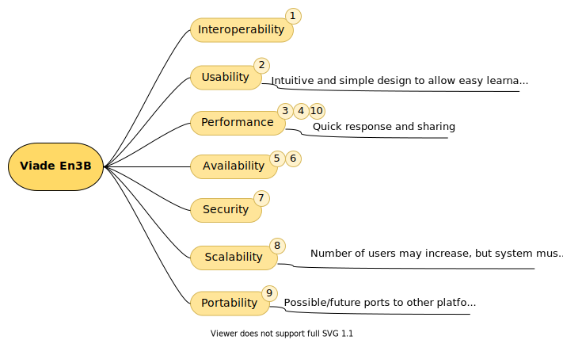
10.2. Quality Scenarios
We will contemplate two kind of scenarios: * Usage scenarios describe the reaction of Viade to a stimulus. * Change scenarios indicate whether a modification of the system is done.
| ref | Quality attribute | Quality scenario | priority |
|---|---|---|---|
1 |
Interoperability |
A user can share routes with users that use other applications. |
High |
2 |
Usability |
A user must be able to use the application in an intuitive way. |
High |
3 |
Performance |
The system must be able to follow in realtime the route a user is doing. |
Medium |
4 |
Performance |
When finished, a route must be shared within 30 seconds with the user’s friends. |
High |
5 |
Availability |
A user can search all his friend’s routes in any moment. |
Medium |
6 |
Availability |
If a user doesn’t have Internet connection when doing a route, he will be able to upload the route when connection is restored. |
Low |
7 |
Security |
The application must prevent any user’s data leak. |
Low |
8 |
Scalability |
If number of users increase, the application’s performance must be the same. |
Medium |
9 |
Portability |
The system should be easy to port to another platform in a short period of time. |
Low |
10 |
Performance |
Load times must be under 1 second. |
High |
11. Risks and Technical Debts
RISK |
DETAILS |
The users are not able to interact with the application in an easy way. |
Sometimes, as a developer is easy to interact with your own application, but keeping in mind that non-technical users will interact with it is important to make a good product. |
Poor performance of the application. |
The application may receive a lot of requests at the same time. It is necessary to apply techniques that increase effectively the performance of the application. |
Bad usage of the proposed technologies. |
The usage of solid or react is completely new for the development team. Taking a look and practcing with these technologies can decrease the risk of making mistakes while using them. |
12. Glossary
| Term | Definition | More Information |
|---|---|---|
Solid |
Tim Berners-Lee’s project to to create a decentralized web where users data is separated from application and services. |
|
Pods |
Personal Online DataStore, accessible from the web. Where the information about the user is stored. |
|
React |
A JavaScript library for creating user interfaces. |
|
Inrupt |
Team of developers, designers, and business people who have been working to ensure Solid is becoming robust, feature-rich, and increasingly ready for wide-scale adoption. |
|
MVC |
Software Design Pattern commonly used to implement user interfaces, data and business logic. |
|
Scrum |
Framework for effective team collaboration on complex products |
13. Covid Shield
The Covid Shield is a revolutionary idea that appeared when trying to think about a new feature that could help the world as it is in this complicated situation right now. By simply merging the power of the decentralized systems of Solid, with the Linked Data and ViaDe’s web application, this system can turn into live.
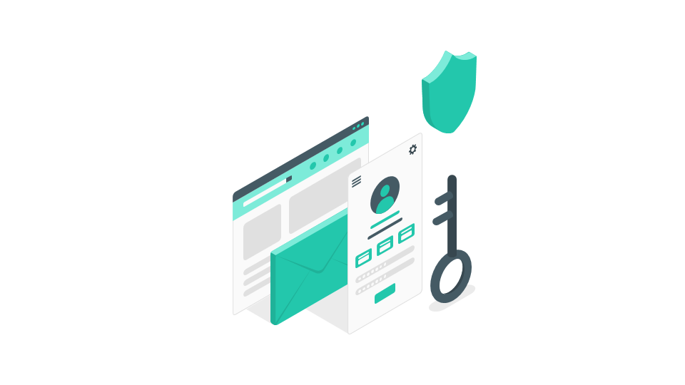
13.1. How it works
ViaDe’s Covid Shield is a quite simple, but also complex, tool. It allows users to be awared of which of the busiest routes today are potentially dangerous to their health because other users have tested positive for Covid-19.
In case any user decides to participate in Covid Shield, they will have to go through a set of steps:
-
Reading and accepting a set of Privacy Terms that indicate which information of the user’s profile will be used in the system. In this case, only the routes the user indicates will be the ones that will be used publicly by the application, as the rest of the data will be only stored in the user’s POD.
-
Selecting which routes are to be included in the program. Through a simple and guided wizard, users will select which routes of the most recently ones they want to include as the most "dangerous ones".
-
Creating new, basic routes to indicate the busiest regions today. In this section, users will be able to indicate their paths to the pharmacy, grocery stores or routes they walk with their dogs.
When these steps are completed, the user is considered as part of the Covid Shield.
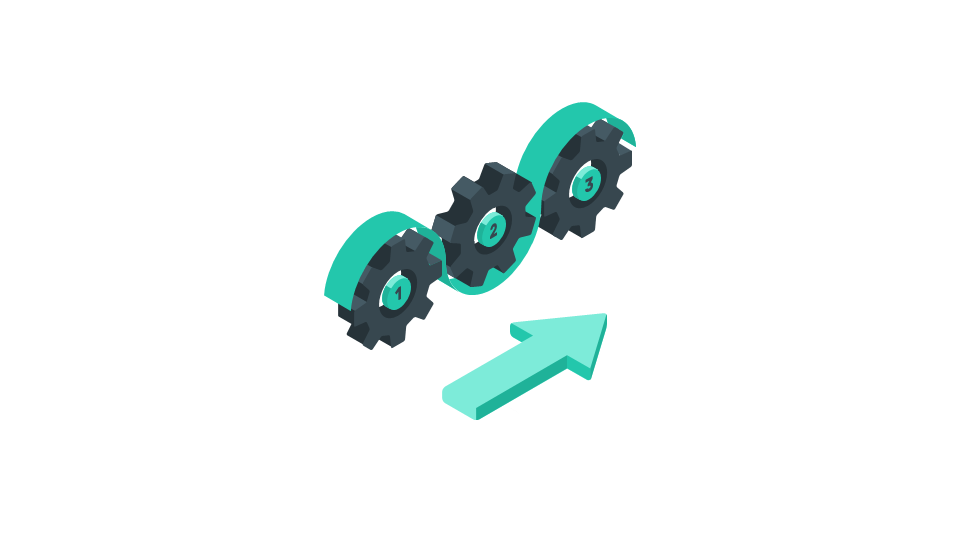
13.2. What is happening underground
Basically, when a user decides to participate, and completes all the required steps, the selected routes are shared privately with a Solid Group, and the user begins to be part of it.
Once a user notifies to the application because he/she has been tested positive for Covid-19, the selected routes turn to be public for the rest of the users that are included in the Covid Shield group. These routes will be shared with the rest of them in an anonymous way, so no data like the name, email, profile photo, or date of birth will be shared. Only the affected routes.
13.3. Is it mandatory?
No, ViaDe’s Covid Shield is just for the user that explicitly accept to participate in this program. Moreover, no user data is required beyond the routes that are selected to be included in the system.
About arc42
arc42, the Template for documentation of software and system architecture.
By Dr. Gernot Starke, Dr. Peter Hruschka and contributors.
Template Revision: 7.0 EN (based on asciidoc), January 2017
© We acknowledge that this document uses material from the arc 42 architecture template, http://www.arc42.de. Created by Dr. Peter Hruschka & Dr. Gernot Starke.